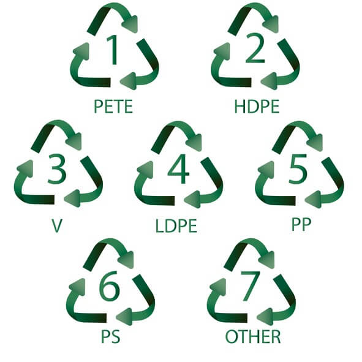

Why Recycling Matters
Recycling is an essential practice that helps reduce waste and conserve natural resources. By recycling materials, we can minimize the environmental impact of waste disposal and promote sustainability.
Every year, millions of tons of recyclable materials end up in landfills. By recycling, we can divert these materials from landfills and reduce the need for new raw materials, which in turn helps to preserve our planet's resources.
Benefits of Recycling
- Reduces the amount of waste sent to landfills and incinerators
- Conserves natural resources such as timber, water, and minerals
- Saves energy and reduces greenhouse gas emissions
- Encourages the development of new products and technologies
By understanding the importance of recycling and actively participating in recycling programs, we can all contribute to a healthier planet and a more sustainable future.